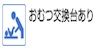
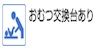

Shinjuku Gyoen
(Shinjuku Gyoen)
03-3350-0151
03-3350-1372
shinjuku@env.go.jp
Shinjuku Gyoen "Ministry of the Environment"
9:00 to 16:00
(16:30 closed down)
※ It is a greenhouse reconstruction under construction
Every Monday
(The following day if the festival),
Year-end and New Year holidays
(29 - January 3 December)
An hour and a half about 1 hour to
200 yen 15 years of age or older,
Elementary and junior high school students ¥ 50,
Free infant
Card use / not available
And people with disability Contact
Admission of one person the caregiver is free.
(Not copy)
Senior Discount is not.
The fold line 4 Metropolitan reason the "Gardens" exit, the process goes to Waseda towards the east Gyoen street. Turn left "Yotsuya-chome" intersection, turn left in Shinjuku as the "chome Shinjuku" intersection front (Okido) Parking
About 5 minutes walk about 5 minutes walk from JR Sobu "Sendagaya" station from Exit 1 Tokyo Metro Marunouchi Line Shinjuku Gyoen Mae Station
Immediately Shinjuku WE bus from "Shinjuku Gyoen" bus stop
Five
¥ 2,000 up to 3 hours, 30 per 400 yen thereafter
200 units
500 yen up to 3 hours, ¥ 100 every 30 minutes thereafter
It can not be reserved. Time (19:00 GR) 8:00 to 20:00
Student
Group
Couple
Family
Senior
Silver
Capital designated historic buildings
Important Cultural Property old European-style building Gokyu-sho
Tokyo historic building old Goryo-tei
Other Services
| Experience Program | Yes
It is a natural classroom that targets the natural forest classroom parent and child of mother and child. Please visit our website for more information. |
Equipment guide | Food & beverage there toilet facilities
Pets not allowed (I can admission auxiliary dog) |
Foreign language brochure | English Chinese (Simplified) Korean |
|---|
 
